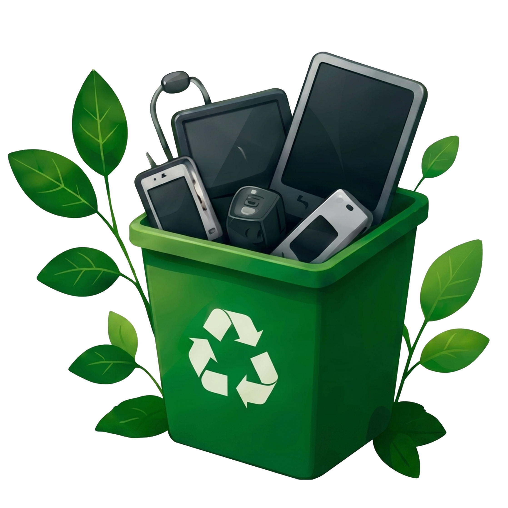
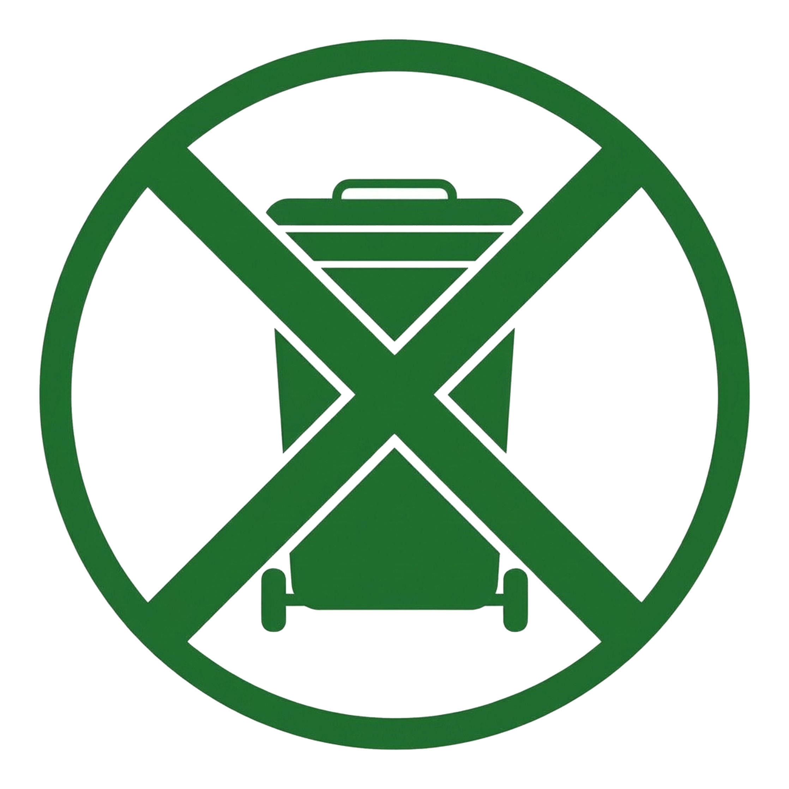
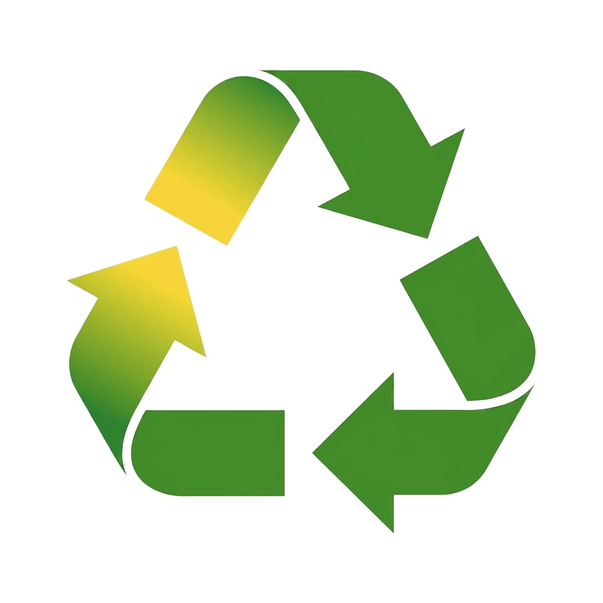
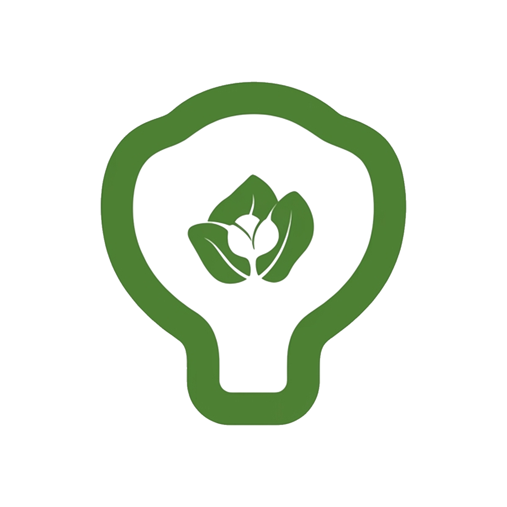
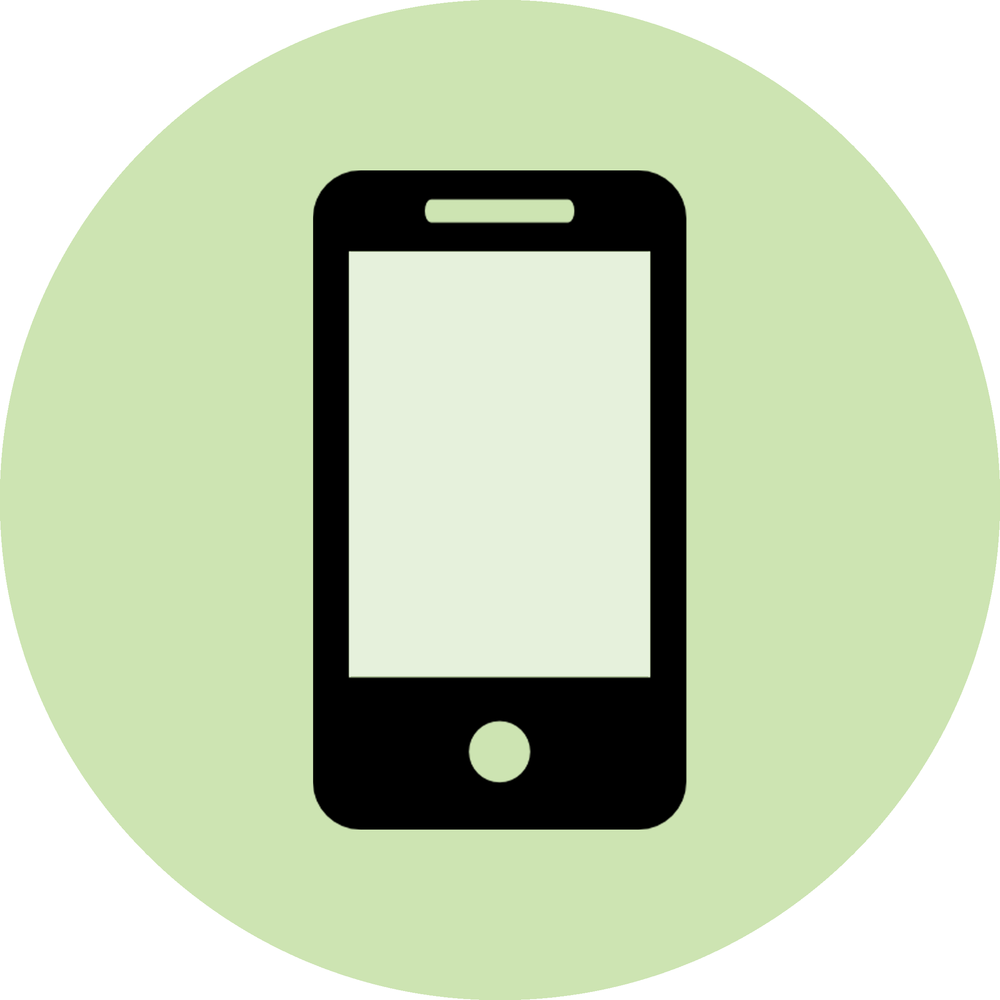
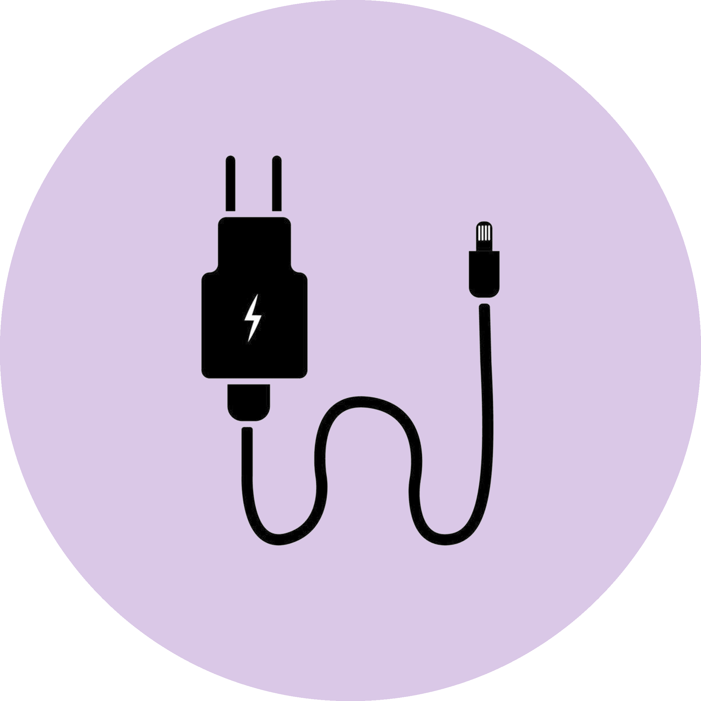

EcoTech
Tecnologia que cuida do futuro
Tecnologia que cuida do futuro
Aprenda a reduzir, reutilizar e descartar corretamente resíduos eletrônicos.

Promovemos o uso consciente da tecnologia e ações sustentáveis para um mundo melhor.


O ODS 12 busca garantir padrões de consumo e produção sustentáveis, reduzindo o desperdício, incentivando a eficiência no uso de recursos e promovendo práticas responsáveis ao longo de toda a cadeia produtiva.
No contexto tecnológico, isso envolve utilizar equipamentos de forma consciente, prolongar sua vida útil e realizar o descarte correto dos resíduos eletrônicos.




Alguns materiais tecnológicos precisam de atenção especial no descarte.

Devem ser encaminhados para pontos de coleta apropriados.

Peças podem ser reaproveitadas ou recicladas, evitando a poluição.

Devem ser entregues em pontos de coleta especificos.

Podem conter materiais recicláveis e devem ter destinação correta.
Evite trocar equipamentos sem necessidade. Use de forma consciente.

Doe, conserte ou dé uma nova finalidade aos equipamentos.

Separe os resíduos e procure pontos de coleta para que eles sejam reciclados corretamente.
Digite o nome do material para consultar informações
sobre o descarte correto.